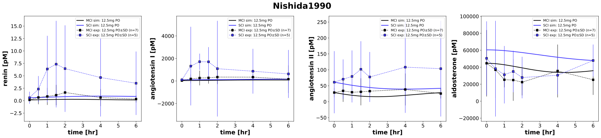

|  |
../../../../experiments/studies/nishida1990.py
"""Nishida1990 experiment"""
from copy import deepcopy
from typing import Dict
from sbmlsim.data import DataSet, load_pkdb_dataframe
from sbmlsim.fit import FitMapping, FitData
from sbmlutils.console import console
from pkdb_models.models.captopril.experiments.base_experiment import (
CaptoprilSimulationExperiment,
)
from pkdb_models.models.captopril.experiments.metadata import Tissue, Route, Dosing, Health, Fasting, \
CaptoprilMappingMetaData, PKPDData
from sbmlsim.plot import Axis, Figure
from sbmlsim.simulation import Timecourse, TimecourseSim
from pkdb_models.models.captopril.helpers import run_experiments
class Nishida1990(CaptoprilSimulationExperiment):
"""Simulation experiment for Nishida1990.
Comparison of the pharmacokinetics and pharmacodynamics of captopril
in patients with congestive heart failure.
"""
route = "PO"
dose = 12.5 # mg
elements_unique = "renin"
yid = "[ren]"
heart_function = {
"group1": "Moderate cardiac impairment",
"group2": "Severe cardiac impairment",
}
heart_function_id = {
"group1": "MCI",
"group2": "SCI",
}
ren = {
"group1": 6.84, # pg/ml
"group2": 26.6,
}
ang1 = {
"group1": 47.0, # pg/ml
"group2": 133.0,
}
ang2 = {
"group1": 30.0, # pg/ml
"group2": 64.0,
}
ald = {
"group1": 16.1, # ng/ml
"group2": 21.8,
}
colors ={
"Moderate cardiac impairment": "black",
"Severe cardiac impairment": "#3C33FF",
}
element_unique = ["concentration_renin", "_angiotensin I_", "_angiotensin II_", "_aldosterone_"]
def datasets(self) -> Dict[str, DataSet]:
dsets = {}
self.reset_state()
for fig_id in ["Fig2"]:
df = load_pkdb_dataframe(f"{self.sid}_{fig_id}", data_path=self.data_path)
for label, df_label in df.groupby("label"):
dset = DataSet.from_df(df_label, self.ureg)
for element in self.element_unique:
if element in label and "all" not in label:
self.data_collection(element=element, label=label)
dset.unit_conversion(
self.data_type, self.conversion_factor
)
dsets[f"{label}"] = dset
break
# console.print(dsets.keys())
# console.print(dsets)
return dsets
def simulations(self) -> Dict[str, TimecourseSim]:
Q_ = self.Q_
tcsims = {}
heart_function_values = {
"group1": self.cardiac_map["Moderate cardiac impairment"],
"group2": (self.cardiac_map["Severe cardiac impairment"] * 3 + self.cardiac_map["Cardiac failure"] * 2) / 5,
}
for group, ren_value in self.ren.items():
tcsims[f"cap_{self.route}_{self.dose}_{group}"] = TimecourseSim(
Timecourse(
start=0,
end=60 * 6, # minutes
steps=400,
changes={
**self.default_changes(),
f"{self.route}DOSE_cap": Q_(self.dose, "mg"),
"f_cardiac_function": Q_(
heart_function_values[group], "dimensionless"
),
f"ren_ref": Q_(ren_value, "pg/ml") / self.Mr.ren,
f"[ren]": Q_(ren_value, "pg/ml") / self.Mr.ren,
f"ang1_ref": Q_(self.ang1[group], "pg/ml") / self.Mr.ang1,
f"[ang1]": Q_(self.ang1[group], "pg/ml") / self.Mr.ang1,
f"ang2_ref": Q_(self.ang2[group], "pg/ml") / self.Mr.ang2,
f"[ang2]": Q_(self.ang2[group], "pg/ml") / self.Mr.ang2,
f"ald_ref": Q_(self.ald[group], "ng/ml") / self.Mr.ald,
f"[ald]": Q_(self.ald[group], "ng/ml") / self.Mr.ald,
},
)
)
return tcsims
def fit_mappings(self) -> Dict[str, FitMapping]:
mappings = {}
for kl, label in enumerate(self.clabels):
mappings[f"fm_cap{self.route}{self.dose}_cap_plasma_chronic_fasting_all"] = (
FitMapping(
self,
reference=FitData(
self,
dataset=label,
xid="time",
yid="mean",
yid_sd="mean_sd",
count="count",
),
observable=FitData(
self,
task=f"task_cap_{self.route}_{self.dose}_{label.split('_')[-1]}",
xid="time",
yid=self.yids[kl],
),
metadata=CaptoprilMappingMetaData(
tissue=Tissue.PLASMA,
route=Route.PO,
dosing=Dosing.SINGLE,
health=Health.HEART_FAILURE,
fasting=Fasting.FASTING,
data=PKPDData.PD
),
)
)
return mappings
def figures(self) -> Dict[str, Figure]:
fig = Figure(
experiment=self,
sid="PD",
num_rows=1,
num_cols=4,
name=f"{self.__class__.__name__}",
height=self.panel_height,
width=self.panel_width * 4,
)
plots = fig.create_plots(
xaxis=Axis(self.labels["time"], unit=self.units["time"]), legend=True
)
for kyu, yid_unique in enumerate(["[ren]", "[ang1]", "[ang2]", "[ald]"]):
plots[kyu].set_yaxis(self.labels[yid_unique], unit=self.units[yid_unique])
for group in self.heart_function.keys():
# simulation
plots[kyu].add_data(
task=f"task_cap_{self.route}_{self.dose}_{group}",
xid="time",
yid=yid_unique,
label=f"{self.heart_function_id[group]} sim: {self.dose}mg PO",
color=self.colors[self.heart_function[group]],
)
for ky, yid in enumerate(self.yids):
if yid == yid_unique:
group = self.clabels[ky].split('_')[-1]
# dataset
plots[kyu].add_data(
dataset=self.clabels[ky],
xid="time",
yid="mean",
yid_sd="mean_sd",
count="count",
label=f"{self.heart_function_id[group]} exp: {self.dose}mg PO",
color=self.colors[self.heart_function[group]],
)
return {fig.sid: fig}
if __name__ == "__main__":
run_experiments(Nishida1990, output_dir=Nishida1990.__name__)
{kind=link}